Streamlining assignment submission and management on a code-grading platform
PDOGs is the code-grading platform used in programming courses at NTU’s Department of Information Management. In 2023, I led a team of three designers in a redesign focused on improving the experience for students and teaching assistants (TAs). We restructured the information architecture and system flows to make submitting assignments faster, and added clearer system guidance to make the TA side easier to learn.
Fixing usability issues to make learning and course management smoother
What is PDOGs?
Picture yourself as a beginner programmer: you finish an assignment, log in, paste your code, hit submit, and see your score instantly. That’s PDOGs (Programming Design Online Grading System). Every semester, it supports 500+ students through their first programming courses.
Why redesign PDOGs?
PDOGs had already gone through several versions, but two problems remained: submitting assignments was slow and tedious, and the TA side was hard to learn. This redesign set out to fix those usability issues so PDOGs could better support students and TAs throughout the course.
Project goal: Fix existing usability issues so the submission and management flows — and the way information is presented — match what students and TAs actually need
Four changes to the student and TA experience
Cleaner, denser information
Resized table columns and put assignment status — what users care about most — first, so students find what they need faster.
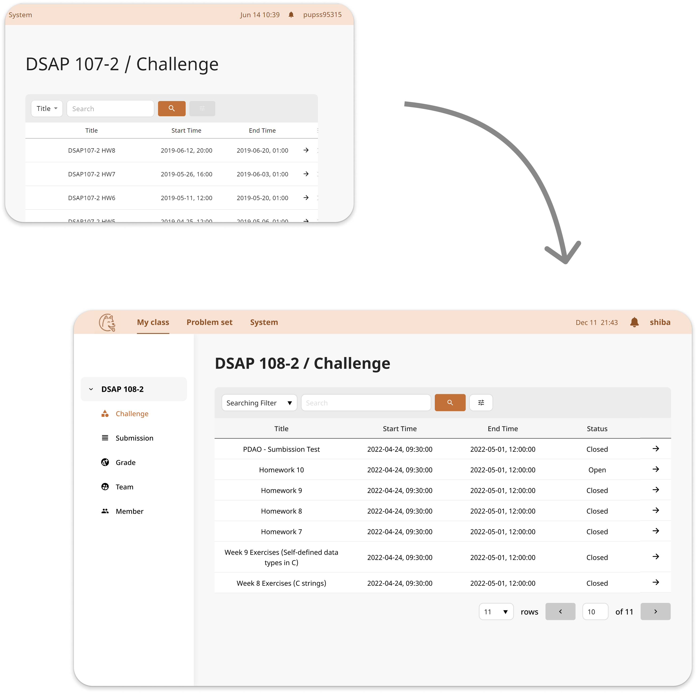
A clearer, friendlier sidebar
The back button now names its destination to prevent wrong turns, and status icons show submission progress at a glance.
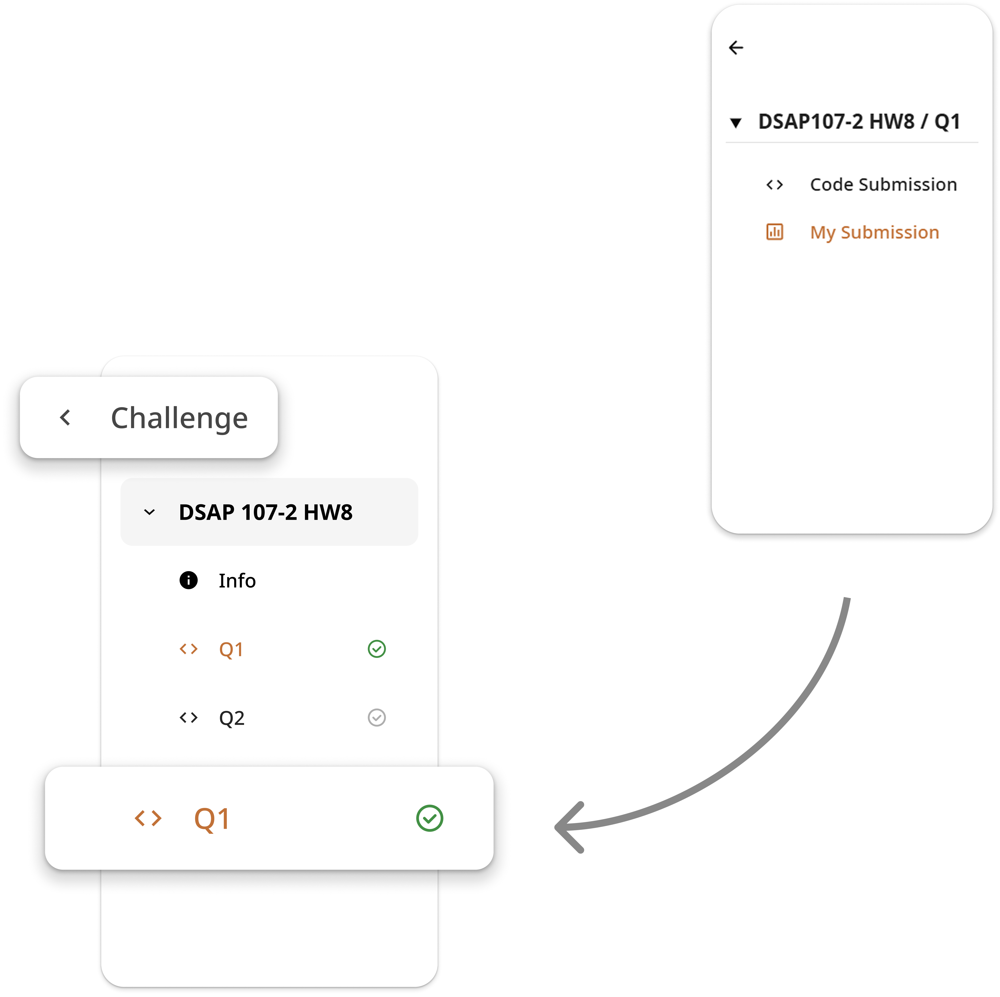
Clearer system feedback
Added explanations of technical terms and input rules to the TA tools, and standardized error messages to make the system easier to learn and debug.
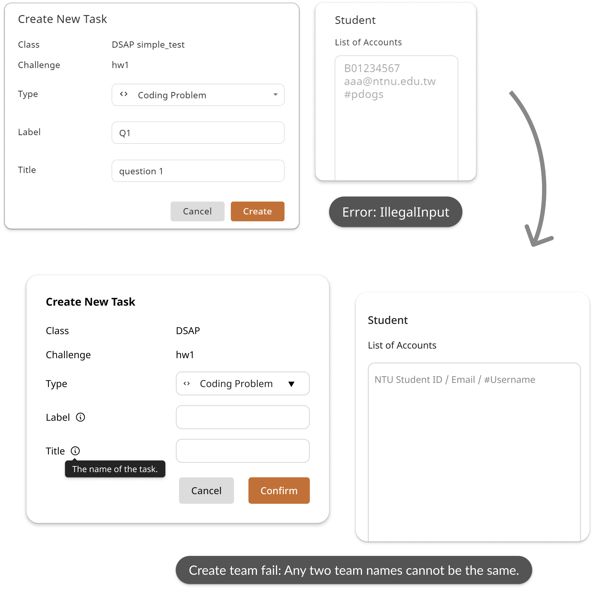
A smoother cross-device experience
Introduced responsive design so students and TAs can check and manage assignments on any device.
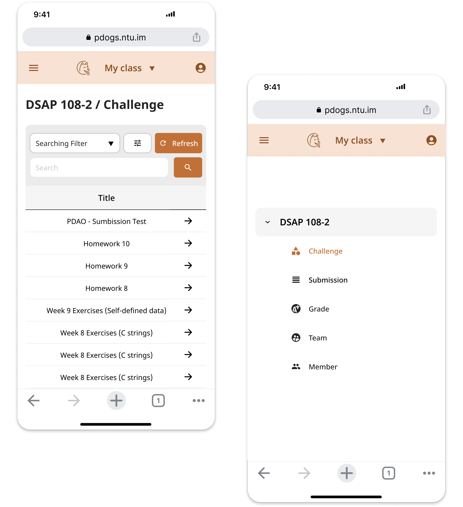
Pinpointing problems from the user’s perspective, then prioritizing with the team
To understand how students and TAs actually used PDOGs, I led preliminary research with the design team. With a tight timeline, I took stock of available resources and worked with the developers to categorize and prioritize what we found — focusing on issues with the biggest user impact that were also technically feasible.
Heuristic evaluation of the student system
Everyone on the team had used PDOGs as a student, so we walked through every user flow and flagged anything confusing or worth improving on sticky notes. I consolidated the issues into a spreadsheet and focused on the flow that matters most to students: submitting a programming assignment.
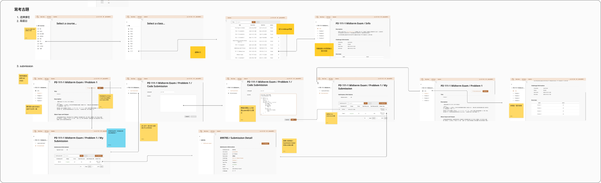
User interviews with TAs
The TA side has more complex features, so I planned interviews with 6 TAs to learn how they used PDOGs, where they struggled, and what could be improved.
Before: planning the interview guide
I ordered the questions along an interview curve — opening with easy background questions, then gradually moving into actual behaviors, thoughts, and feelings.
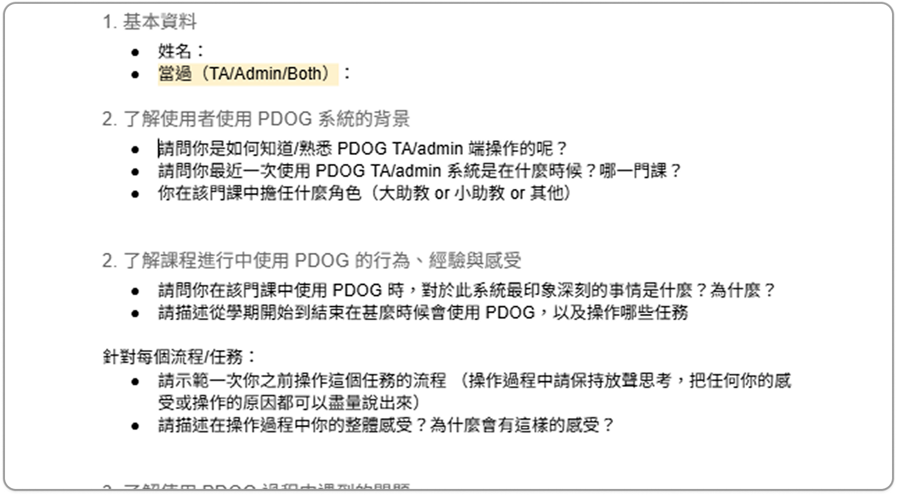
During: semi-structured interviews
TAs shared their screens, walked through their everyday tasks and past experiences, and thought aloud as they went.
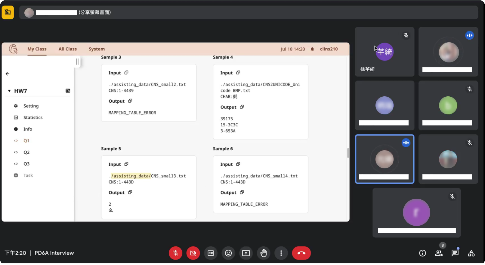
After: converging on problems
We grouped similar issues in an affinity diagram, then sorted them with the developers into system-side and interface-side issues. System-side changes were costly, so we focused on interface-side issues.
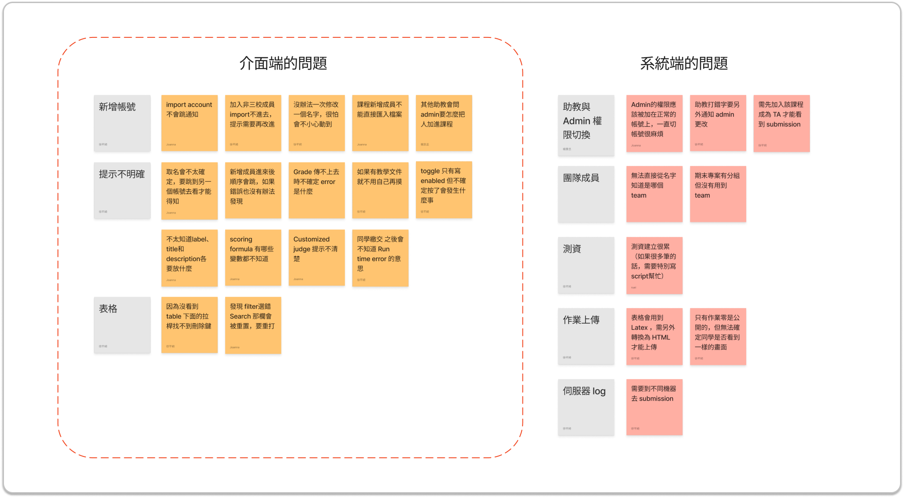
Two core insights
Scattered information, extra steps, and unintuitive interactions slowed down submission
 “I just want to hand in my assignment quickly. Why do I have to go through so many steps every time?”
“I just want to hand in my assignment quickly. Why do I have to go through so many steps every time?”
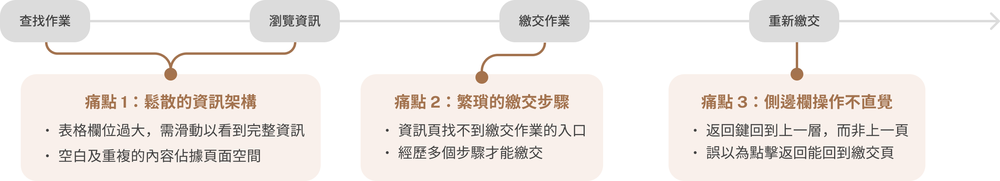
Unexplained terms and interactions made the TA side hard to learn
 “A lot of things aren’t explained clearly. We only learn how to use them by word of mouth from other TAs.”
“A lot of things aren’t explained clearly. We only learn how to use them by word of mouth from other TAs.”
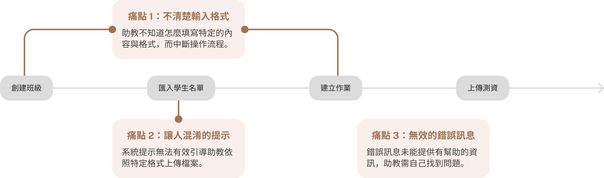
Defining design goals from research and team input
When we shared our findings with the PM and developers, they asked us to add responsive design to this release. Combining the research with the team’s input, I defined four design goals:
Optimize the information architecture
Create a smooth interaction flow
Provide clear system guidance
Improve the cross-device experience
Validating hypotheses with usability testing to move the design forward
We drafted initial proposals for each goal. In team discussions, I realized internal opinions alone wouldn’t convince the PM and developers to commit to changes. So I ran usability tests with 3 PDOGs users to validate our hypotheses, set the design direction, and build the case for implementation.
Goal #1 · Optimize the information architecture
Resize columns to show more at a glance
Each column needs a different width, so we redefined them to fit as much information as possible without truncating anything. Testing also confirmed our hypothesis that the “Status” column should come first.
Surface the information that matters
To make pages easier to scan, we hid empty fields and moved repeated content to the bottom. Our heuristic evaluation also showed that users care less about their exact score than about whether they got full marks. After testing, we added cues like the total score and the Verdict to the table, so users can tell at a glance whether an assignment is complete.
Goal #2 · Create a smooth interaction flow
Make sidebar feedback clear and friendly
The back button used to go up one level in the system hierarchy instead of returning to the previous page, which often confused users. We labeled it with its destination and added status icons that encourage users to finish their assignments.
Explore faster paths to submission
We explored 3 ways to cut submission steps. Option 2 (tabs) got more positive feedback in testing, but required major system changes. We chose Option 3 (direct file upload): it fits how students already work without adding development effort.
Goal #3 · Provide clear system guidance
The TA side is full of technical terms and input formats, but the interface explained little, so users often had to figure things out by trial and error. We added clearer guidance and standardized error messages.
Explain technical terms and input rules
Standardize error messages with likely causes and fixes
Only the error type was shown, so users didn’t know what to do next

Unified the format and added likely causes and fixes to help users troubleshoot quickly

Goal #4 · Improve the cross-device experience
PDOGs had no mobile interface, yet many students check grades and assignments on their phones. Responsive design lets them move seamlessly between devices.
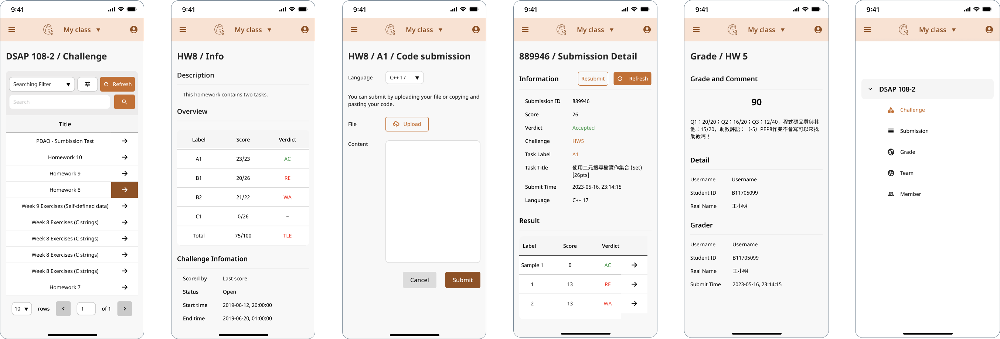
Design system & component guidelines

Faster submission and an easier learning curve for TAs
Restructuring the information architecture and system flows simplified a submission process that had been slow and tedious, while clearer guidance made the TA side easier to learn.
Reflections & learnings
Managing timelines and team communication
This was my first time leading a design team, owning everything from project goals to the timeline. I learned to keep close track of each teammate’s progress, and to factor other teams’ needs and timelines into every decision and schedule.
Designing within an existing system
Many early ideas stalled after conversations with engineering, which was frustrating at first. I came to see that redesigning a mature system isn’t about blue-sky ideas — it’s about finding the most feasible improvements within the system that already exists.